Psikonogram memiliki beberapa tes yang saling terintegrasi yaitu:
DISC merupakan tes psikologi untuk mengetahui 4 elemen perilaku mental Anda, Dominance, Influence, Steadiness, Compliance. Yaitu:
DISC telah dipergunakan lebih dari 30 tahun oleh 40 juta pengguna diseluruh dunia.
DISC adalah model prilaku yang dilihat dari 4 sisi (kuadran), diciptakan oleh William Moulton Marston Ph.D (1893 – 1947) untuk mengukur pola prilaku seseorang dilihat dari kesehariannya atau dari suatu situasi yang spesifik.
DISC dapat diaplikasikan diperusahaan, bisnis dan secara personal guna mengukur tingkat kepemimpinan dan profesional secara pribadi. Dengan DISC maka diharapkan dapat membantu pemahaman interpersonal seseorang dan membantu meningkatkan kekuatan personal tersebut.
Perbedaan pendapat, pendekatan pola kerja, atau solusi produksivitas di tempat kerja, dengan DISC, perilaku model ini dapat membantu sebagai berikut :
Berikut adalah contoh pertanyaan tipe tes DISC:
Berikut adalah contoh hasil tes DISC:
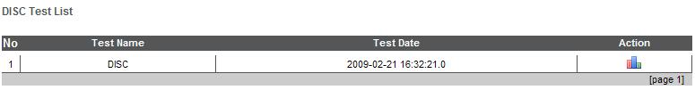
Counterproductive Behaviour Index (CBI) adalah tes untuk mengukur tingkat produktivitas seseorang dari berbagai segi yaitu:
Keuntungan menggunakan tes CBI adalah :
Berikut adalah contoh tipe soal tes CBI:
Dan berikut adalah contoh hasil tes CBI:
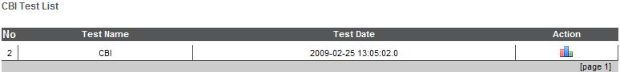 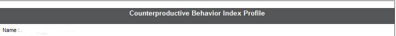 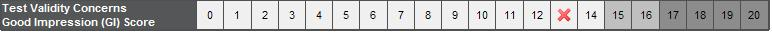Test psikotes guna mengukur beberapa elemen sebagai berikut :
Fitur-fitur yang ada pada tes TQI adalah :

Dan berikut adalah contoh hasil tes TQI:
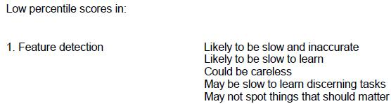
Tes kepribadian MBTI (Mayers-Briggs Type Indicator) merupakan cata memetakan tipe kepribadian. Bagi diri pribadi, tes ini berguna dalam memetakan diri berada dimana dan seperti apa, agar dengan mudah melakukan tindakan dalam berinteraksi dengan orang lain dan lingkungan sekitar. Sementara, bagi perusahaan-perusahaan, tes ini menjadi andalan dalam menilai kepribadian para karyawan untuk melihat tingkat kinerja kolektif yang sangat berpengaruh terhadap perkembangan manajemen perusahaan. Dengan kata lain, bagi perusahaan, tes kepribadian MBTI merupakan salah satu alat untuk mengukur tingkat pencapaian yang telah diraih dari sisi kekuatan SDM yang diperlihatkan dari karakter-karakter yang muncul dari kinerja para karyawan.
Beta III merupakan test yang digunakan untuk menaksir tingkat intelektual seseorang dilihat dari segi non verbal dan perubahan-perubahan yang terjadi di dalamnya. Test ini digunakan secara individual mulai dari usia 16-89 tahun. Dengan adanya perbedaan umur ini menjadikan test ini memiliki hasil yang akurat dan memiliki perkiraan IQ yang stabil.
Kekuatan atau kelebihan dari tes Beta III adalah:
Berikut adalah contoh soal Beta III:
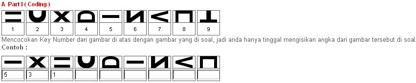 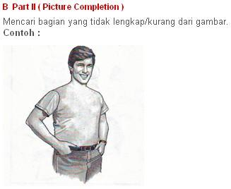 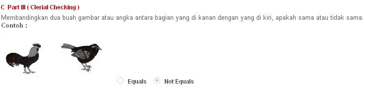 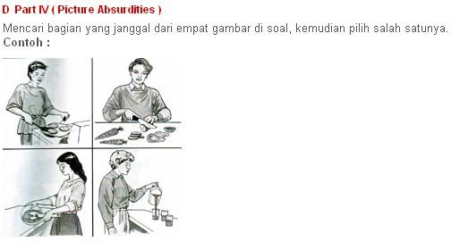 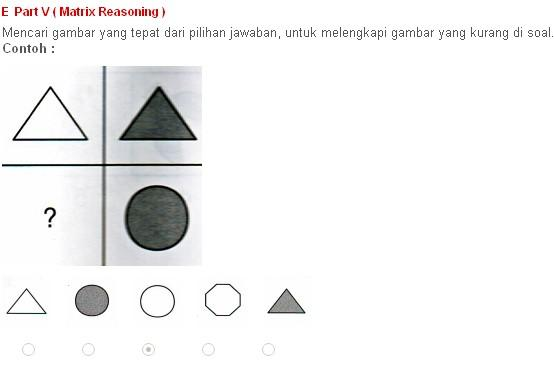Berikut adalah contoh hasil tes Beta III:
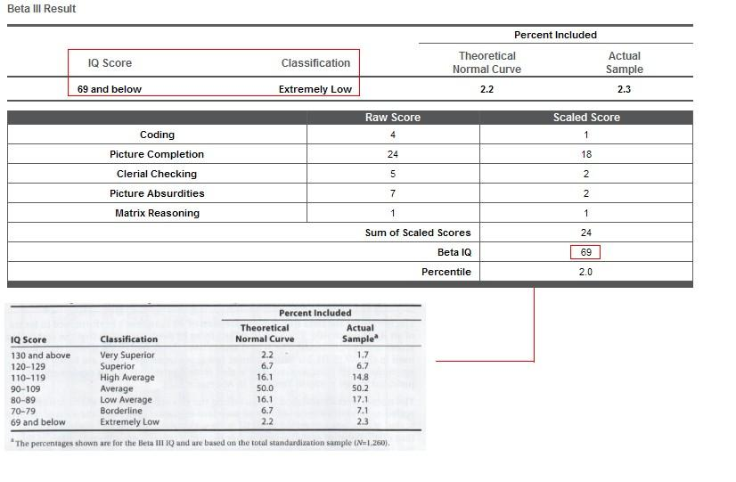